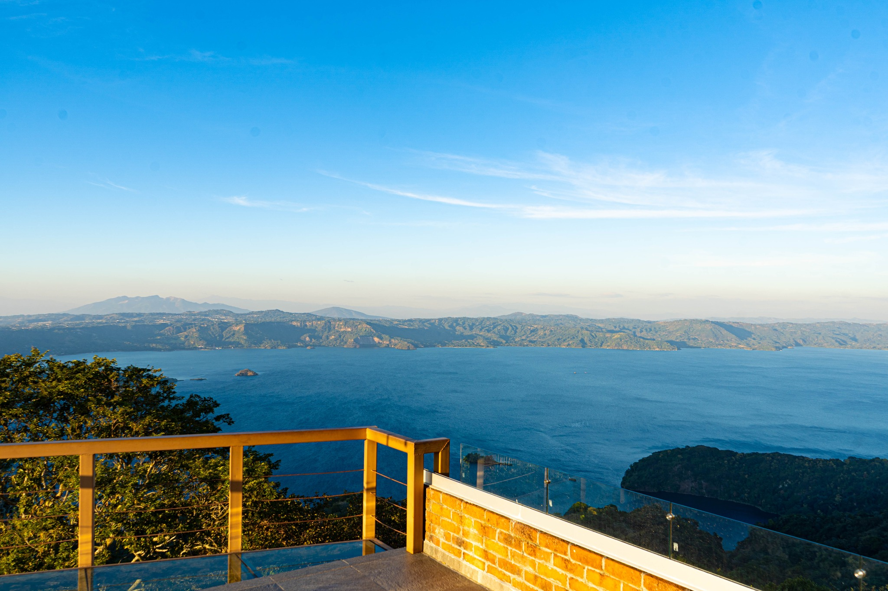
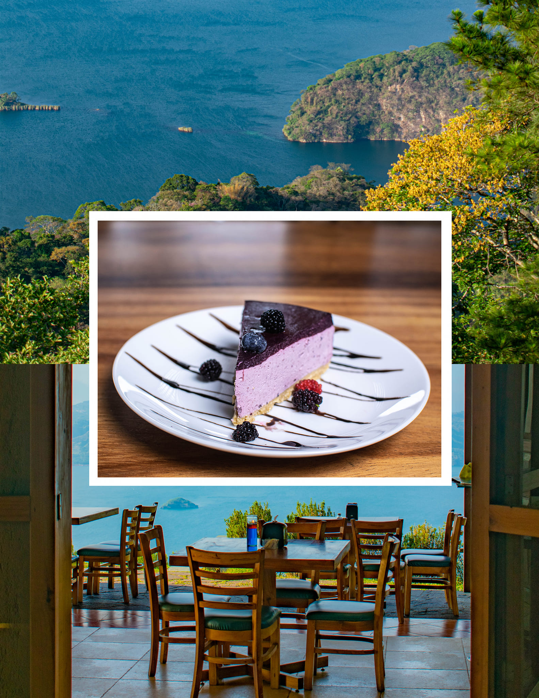

Ruta Panorámica - Lago de Ilopango
La Paz

Disfruta de majestuosos paisajes hacia el Lago de Ilopando, de un lado, y hacia montañas del otro, en este corredor panorámico
A unos pocos minutos de la capital de El Salvador podrás recorrer esta ruta que se ha convertido en un atractivo turístico para nacionales y extranjeros, ya que se trata de un circuito de pueblos que puedes recorrer disfrutando de hermosas vistas.
En el camino puedes pararte a contemplar el imponente Lago de Ilopango o la riqueza natural que constituye esta Zona de Interés Turístico Nacional. Además puedes disfrutar de un rico café o de la gastronomía que ofrecen los restaurantes de la zona.
Las Tres Piedras
Un restaurante espectacular, relativamente escondido entre las maravillas que nos ofrece la naturaleza, con una increíble vista hacia el lago de Ilopango.

Mirador al Lago de Ilopango
Disfruta de esta vista al lago de Ilopango desde el increíble mirador. Una vista perfecta para capturar momentos únicos en familia o con amigos.
Se encuentra ubicado en el km 21.5 de la Carretera Ruta Panorámica en el municipio de San Francisco Chinameca (La Paz)

Restaurante
Descubre una experiencia de sabores con deliciosos platillos y una maravillosa vista.
Café Mirador
Me encanta este lugar por su increible vista hacia el lago de Ilopango, además de un clima fresco, te recomiendo venir al caer la tarde y disfrutar de un delicioso café acompañado de un postre de tu elección.